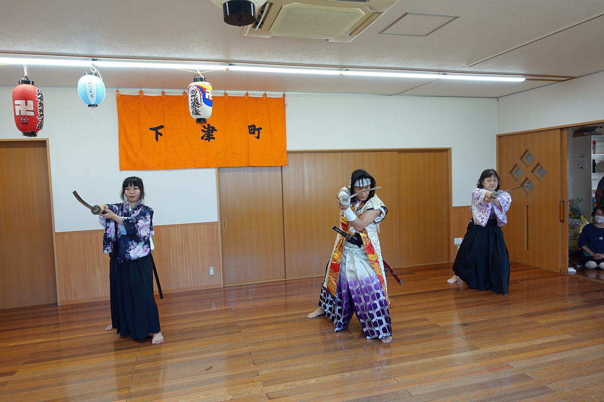
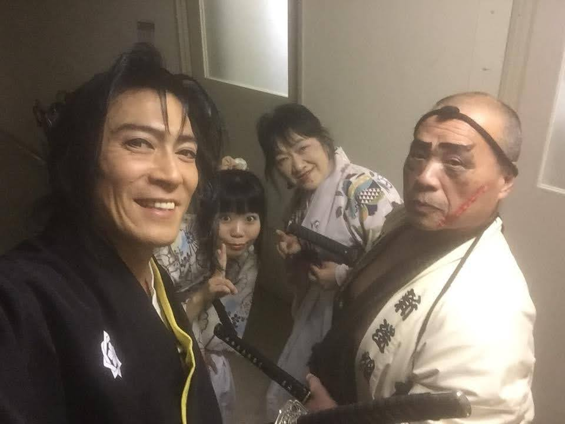
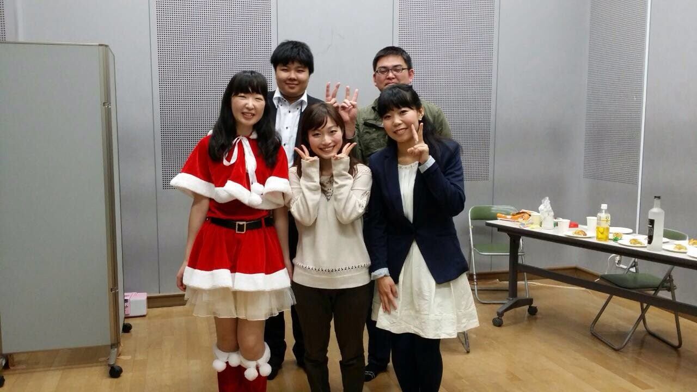

WebDesign
-
「耳つぼジュエリースタジオウツミ」のWebページを制作しました。
-
京都新聞ウェブサイト「中信杯全京都学童軟式野球選手権大会」のタイトルバナーをデザインしました。
-
京都新聞ウェブサイト「中信杯全京都学童軟式野球春季大会」のタイトルバナーをデザインしました。
-
京都新聞ウェブサイト「一日一パン」地図作成、地図上アイコンをデザインしました。
-
京都新聞ウェブサイト「中信杯全京都学童軟式野球選手権大会」のタイトルバナーをデザインしました。
-
侍エクササイズチーム「舞武櫻」のWebページを制作しました。
-
あっぷる本舗「ヘアターバン」の商品画像をデザインしました。
-
京都新聞ウェブサイト「全国高校野球」のデザイン・コーディング・タイトルバナーデザインを担当しました。
-

京都新聞ウェブサイト「東京五輪・パラリンピック特集」選手紹介ページのデザイン・コーディングを担当しました。
-
京都新聞ウェブサイト「中信杯全京都学童軟式野球選手権大会」のタイトルバナーをデザインしました。
-
京都新聞ウェブサイト「中信杯全京都学童軟式野球春季大会」のタイトルバナーをデザインしました。
-
京都新聞ウェブサイト「読者に応える」のデザイン・コーディングを担当しました。
-
求職者支援訓練「Webプログラム制作科」の課題として作成しました。
-
京都新聞ウェブサイト「梅だより」のタイトルバナーをデザインしました。
-
京都新聞ウェブサイト「デジタルサイネージ ニュース配信システム」のデザイン2・デザイン3背景デザイン、紹介ページのデザイン・コーディングを担当しました。
Illustration
Media
2023.12.24
[SUNDAY]
ライブ株式会社KIRINZ「日本酒美人発掘コンテスト」 ファイナリスト
2023.11.26
[SUNDAY]
殺陣「"2023"第10回 KBS紅白歌の競演」 山下忠彦さん「朝日が昇る場所」「二人で居る未来」
2023.11.23
[THURSDAY]
殺陣「第35回 たかとり城まつり」 デモ「基本動作・春」、殺陣ショー「美女剣士と野獣侍」
2023.11.12
[SUNDAY]
演劇特別公演「与市～THE MUSICAL～開かれたアトリエ」 安倍晴明役、ワークショップ
2023.11.11
[SATURDAY]
殺陣「第73回姫路お城まつり」 殺陣ショー「美女剣士と野獣侍」
2023.08.19
[SATURDAY]

殺陣「淀下津町地蔵盆」 殺陣ショー「三十三 五十五の型披露」、基本動作「山形、横面、突き、抜き胴」、約束組手「夏」、殺陣体験
2023.04.01
[SATURDAY]
殺陣「伏見のまんなかでSUPER!爆上げフェスティバル」 殺陣ショー「三十三 五十五の型披露」、デモンストレーション「美女剣士と野獣侍」、殺陣エクササイズ「365日の紙飛行機」
2023.03.12
[SUNDAY]
ミュージカル「与市－The Musical－2023」 源義経役
2022.11.27
[SUNDAY]
殺陣「"2022"第9回 KBS紅白歌の競演」 山下忠彦さん
2021.11.28
[SUNDAY]
殺陣「"2021"第8回 KBS紅白歌の競演」 山下忠彦さん
2020.12.06
[SUNDAY]
殺陣「"2020"第7回 KBS紅白歌の競演」 山下忠彦さん
2020.02.11
[TUESDAY]
殺陣「KBS京都カルチャーフェスティバル」 殺陣教室ステージ発表
2019.12.08
[SUNDAY]
殺陣「光のページェント TWINKLE JOYO 2019」 演舞「強い心のままで」
2019.12.01
[SUNDAY]
殺陣「"2019"第6回 KBS紅白歌の競演」 山下忠彦さん
2019.09.14
[SATURDAY]
モデル芳裳苑「着物ファッションフェスティバル in 二条城」 訪問着
2019.04.28
[SATURDAY]
仮装第51回草津宿場まつり「草津時代行列」 新選組役
2018.12.01
[SUNDAY]
殺陣「"2018"第5回 KBS紅白歌の競演」 山下忠彦さん
2018.08.02
[THURSDAY]
～05
[SUNDAY]
声優第24回 京都国際子ども映画祭「12歳の女の子についての入門書」 ティルダ・コブハム・ハーベイ役
2018.04.19
[SUNDAY]
歌唱「SAKE Spring のど自慢大会」 miwa「ヒカリへ」
2017.12.17
[SUNDAY]
殺陣「光のページェント TWINKLE JOYO 2017」 侍エクササイズ「恋」
2017.11.26
[SUNDAY]

殺陣「"2017"第4回 KBS紅白歌の競演」 山下忠彦さん
2017.11.23
[THURSDAY]
殺陣「たかとり城まつり」 即興殺陣付け
2017.08.27
[SUNDAY]
演劇劇団SMA*武「かぐや姫」 かぐや姫役
2017.04.15
[SATURDAY]
演劇劇団SMA*武 旗揚げ公演「かぐや姫」 かぐや姫役
2016.12.17
[SATURDAY]
殺陣「光のページェント TWINKLE JOYO 2016」侍エクササイズ
2016.11.27
[SUNDAY]
殺陣「"2016"第3回 KBS紅白歌の競演」 山下忠彦さん
2016.11.23
[WEDNESDAY]
殺陣「たかとり城まつり」 演舞「心の平和」
2016.09.25
[SUNDAY]
演劇老人ホーム たきのみね慰問 劇「浦島太郎」 ひらめ役
2016.05.22
[SUNDAY]
モデル芳裳苑「着物ファッションフェスティバル in 名古屋」 刺繍小紋
2015.11.29
[SUNDAY]

殺陣「"2015"第2回 KBS紅白歌の競演」 山下忠彦さん
2015.10.28
[SUNDAY]
モデル芳裳苑「着物ファッションフェスティバル in 東寺」 訪問着
2015.05.17
[SUNDAY]
殺陣「大坂ノ陣合戦祭り2015」 武者行列・合戦絵巻「真田幸村」アンサンブル
2015.05.02
[SUNDAY]
殺陣「春うらら組 企画公演 第三弾【風薫る初蝶～若葉を彩る時～ 】」 侍エクササイズ「にんじゃりばんばん」「恋するフォーチュンクッキー」

2015.04.04
[SATURDAY]
殺陣「春うらら組 明石公園 春の陣【麗か～のどかな空に舞う桜～】」 侍エクササイズ「にんじゃりばんばん」・殺陣ショー
2015.03.29
[SUNDAY]

声優劇団剣闘会 朗読「シンデレラ」・音響
2014.11.23
[SUNDAY]
殺陣「"2014"第1回 KBS紅白歌の競演」 山下忠彦さん
2012.10.27
[SATURDAY]
歌唱「加茂川マコトイメージオーディション」 出町の唄 FUN FUN FUN
2011.08.14
[SUNDAY]
声優「ハレルのながれぼし」 プレア役
2010.11
声優ラジオ大阪「もえもえポンバシ系」 ゾーンジングル